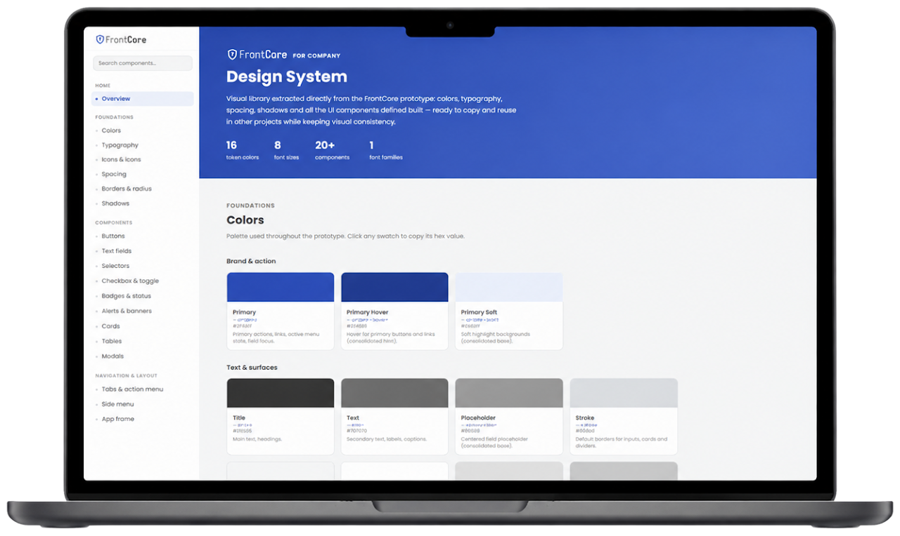
AI Worflows
Using AI in design workflows is now part of reality. Using AI to brainstorm and prototype is not only possible, but increasingly expected of Product Designers today. There are two possible approaches: 1- design and prototype directly with AI, or 2- Use Figma MCP to maintain manual control over the design.
Design System
Using Claude Code we can easily create an interactive Design System with tokens, HTML, CSS and an entire Json ready to be copied by the devs team and used in real products.
This one is particular was create using product already live. Now this design can be re-used efortlessly in new features or in different products of the same company.
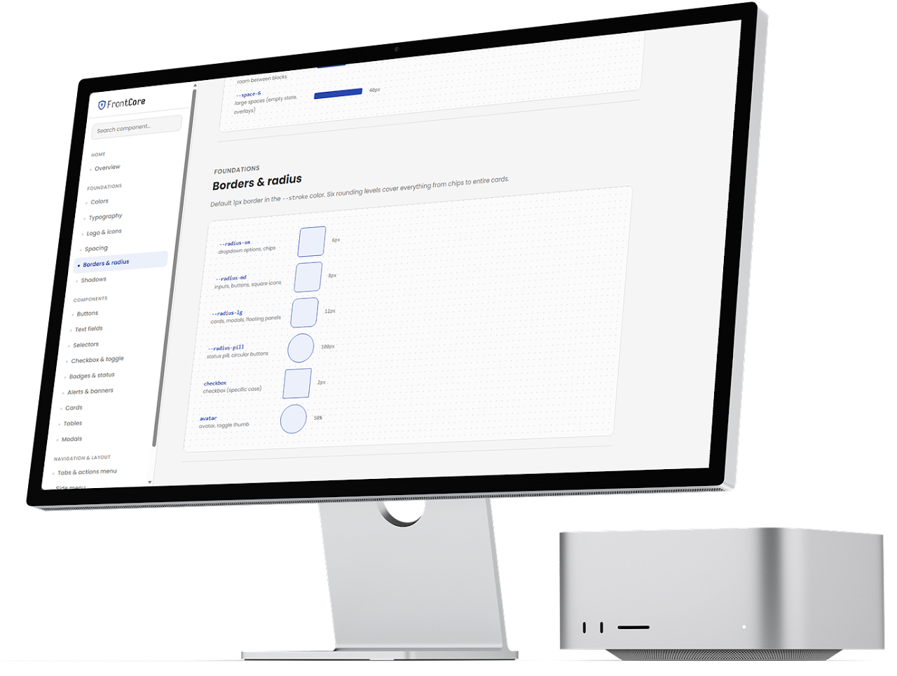
Having a live design system helps not only the tech team, but also POs and Stakeholders because they can navigate the DS just like any other website and use the information in specification pages. It can also be used to show new employees the company visual identity during the ondoarding.
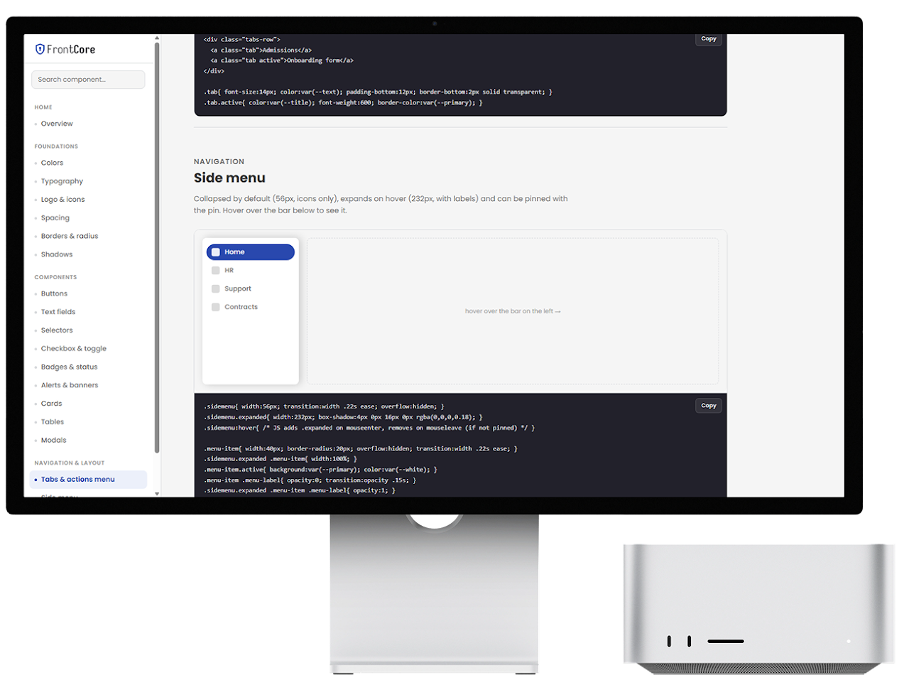
Developers can easily copy component's HTML and CSS as well as entire Jsons such as for colors.
This approach speeds things up in the development prosses.
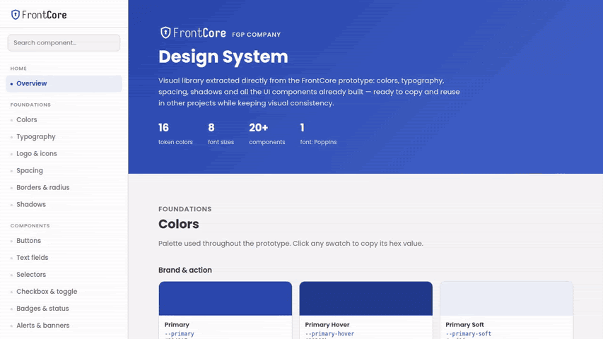
Pathway
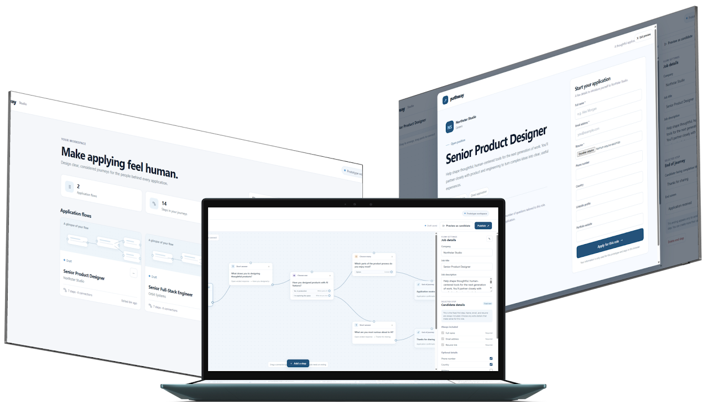
Pathway is a prototype for designing thoughtful job application experiences. It gives hiring teams a visual flow builder where they can create roles, arrange application steps, connect those steps into journeys, and define how candidates move through the process. The prototype includes seeded examples such as Senior Product Designer and Senior Full-Stack Engineer, as well as the ability to create new flows from scratch.
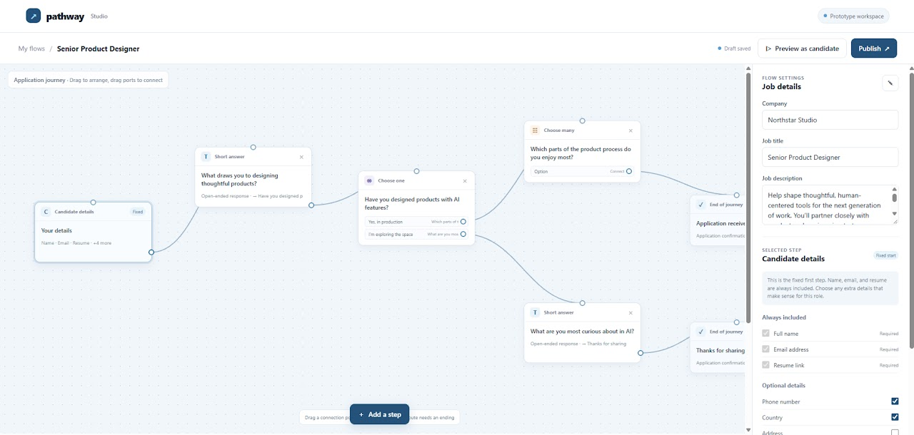
The builder supports several types of steps: candidate information, short-answer questions, single-choice questions with branching paths, multi-choice questions, and ending screens. Hiring teams can configure the company, job title, description, optional candidate fields, question text, answer options, and completion outcomes. The flow can then be previewed from the candidate’s perspective or published as a shareable application link.
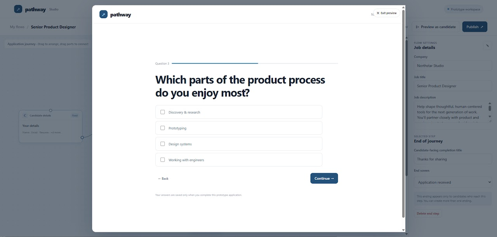
From the candidate’s perspective, Pathway presents a clear, welcoming application form that begins with essential information such as name, email, and resume, etc. Depending on the role’s configuration, candidates may answer open-ended questions, select from options, or follow different paths based on their responses, with progress and completion states designed to make the process feel focused.
Using AI to code it:
I created Pathway through an AI-assisted process using Claude Code. I used GitHub as the project repository and publishing platform, while iterating through the product concept, flow builder, and candidate experience conversationally.
I also used the Figma MCP with Claude Code to share the intended design system, typography, colors, and wireframe concepts. This helped Claude translate the visual direction into a functional, responsive prototype.
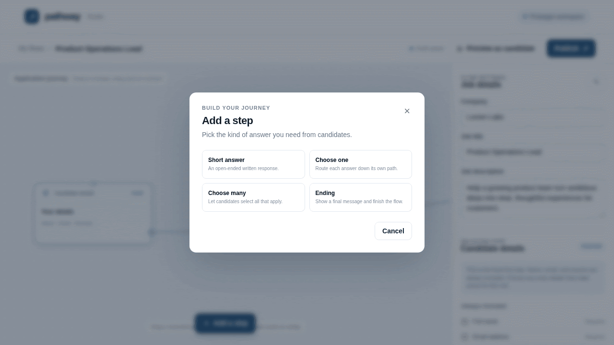
MarcaFlow
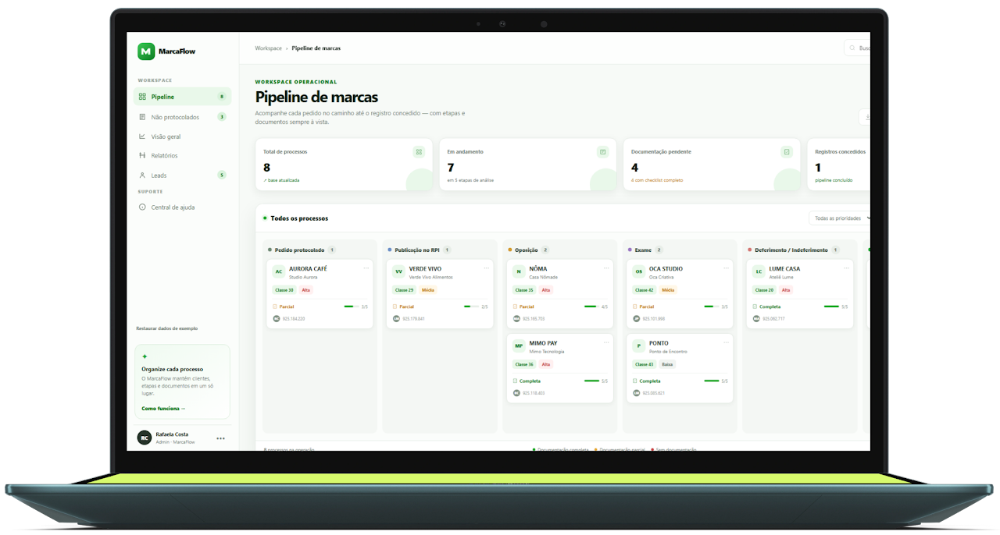
MarcaFlow is a live prototype for managing trademarks, centralizing leads, clients, documents, and process stages in one place. It includes a Kanban pipeline, Leads screen with table or Kanban views, filters, checklists, Google Drive links, reports, performance indicators, and record movement between process stages.
How was it created?
MarcaFlow was created 100% through an AI-assisted coding process. For this specific project I used Manus. I described the desired workflows—such as the Pipeline, Leads, Non-Protocolled Clients, Overview, and Reports screens—and the AI translated those ideas into interface components, data structures, navigation, filters, checklists, Kanban interactions, local storage behavior, and responsive layouts. Features were built gradually, tested in the browser, adjusted based on visual feedback, and refined through short development cycles.
How I used Github for this project:
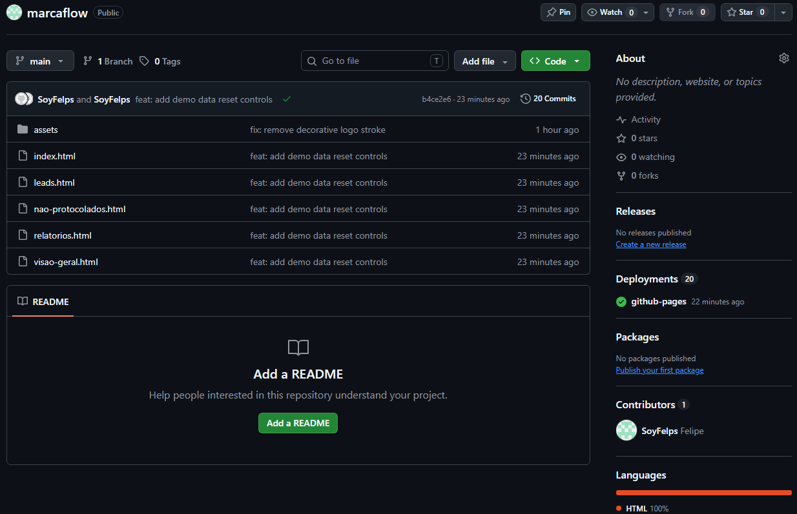
GitHub served as the project’s central code repository and collaboration layer. Through the GitHub connector, the AI could inspect the existing files, understand the project structure, update multiple pages consistently, create assets such as the MarcaFlow SVG logo, commit changes, push them to the repository, and verify the published files. I remained responsible for defining priorities and reviewing the results, while the AI handled implementation, testing, debugging, and synchronization across the application. This combination of user direction, AI-generated code, browser validation, and GitHub version control made it possible to evolve MarcaFlow quickly as a functional prototype.
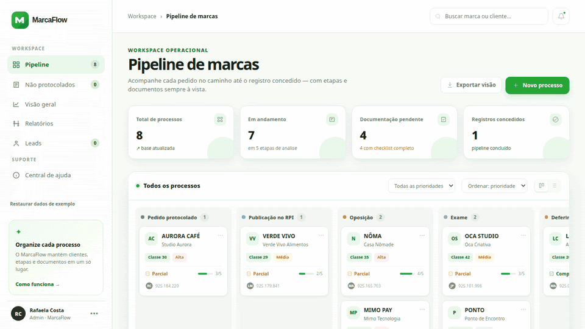